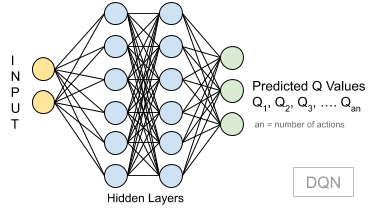
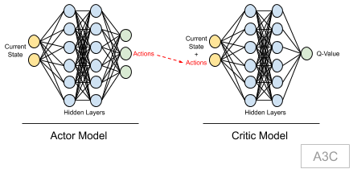
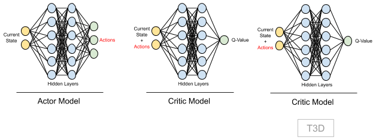
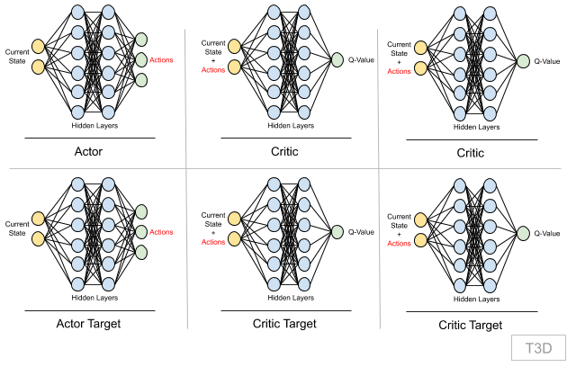
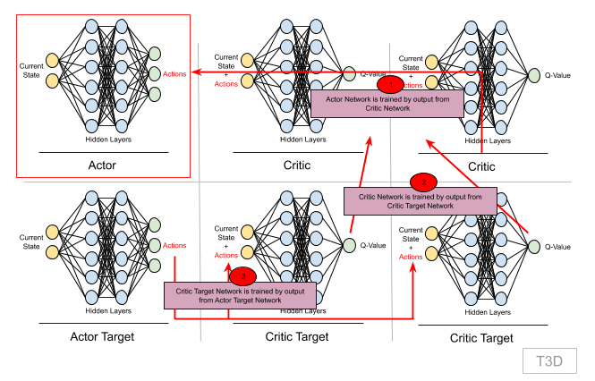
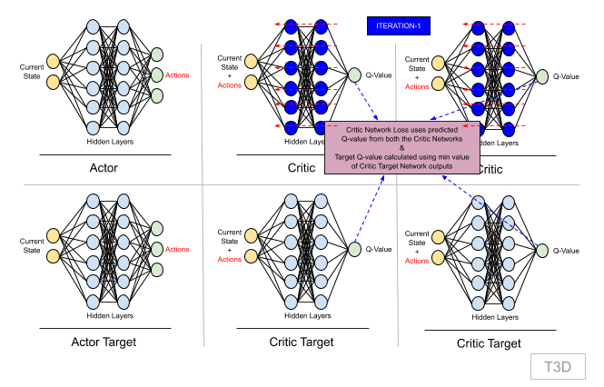
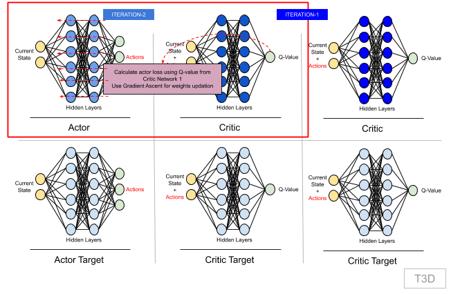
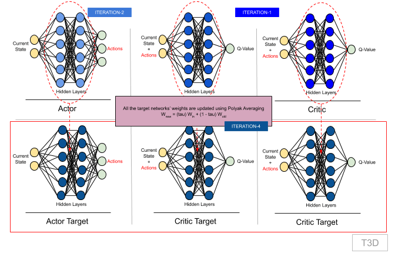
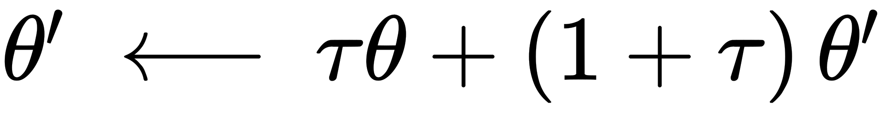

T3D [Twin Delayed DDPG] Reinforcement Learning
Posted on Sat 04 April 2020 in ml
Understanding Implementation Of Twin Delayed DDPG (T3D)
T3D is a reinforcement learning model, based on Asynchronous Advantage Actor-Critic Algorithm (A3C). But before we understand and implement T3D, let's get a quick understanding of what is reinforcement learning, what is A3C model and why to use A3C based models.
In reinforcement learning, an agent/program is continuously learning from its environment. It learns on what to do, how to map situations to actions with the aim to maximize rewards it acheive by performing right actions for particular situations.
As we all know about the Q equation derived from famous Bellman Equation, which is the basis for reinforcement learning:

So in above equation:
- Q (s, a) = Q-value of being in state (s) and reaching state (s') by taking an action (a)
- R (s, a) = Reward you get after taking that action and reaching state (s') from state (s)
- γ (gamma) = the discounting factor (a hyperparameter), to balance the immediate reward and future reward
- Qmax (s', a') = max Q value across all actions (a') taken from state (s')
Q-value can be considered as a value associated with a specific action. Max of multiple Q-values for multiple actions is what is considered as action for the agent.
For solving complex problems, we use a Deep Q Network (DQN), to predict Q-values as opposed to using a value table based model.
A DQN takes in state as input and outputs Q values for all possible actions.

Since there are discrete number of actions, it will not work for continuous action spaces. For example, it works fine if say a car's action is to move 5 degrees left or right or no movement at all. But if it has be a range like -5 to +5 degrees, then this will not work. Hence comes in A3C models.

A3C models is an extension to DQN model, where we have two models: Actor & Critic.
Actor is trying to predict an action based on the current state (policy network), and critic is trying to predict the V-Values (max Q-Values) given the state and actions. Critic model ensures that the actor model takes right action as part of training process. To make it work for continuous action spaces, the value of actor model (max output) is actually used for training. This value defines the action value. More details on why actor-critic model and its training aspects is covered as part of T3D explanation.
In T3D, twin stands for "2 Critic models", hence here we have 1 Actor, 2 Critic models.

Two critic models gives stability to our network. More explanation on this and how it is trained is covered step-by-step with actual implementation.
Step 1: Initialization
Import all the required libraries. A note on few important libraries:
- https://pytorch.org: We use PyTorch for our neural network implementation
- Gym: This provides a variety of environments like Atari, MuJoCo, etc for our reinforcement learning experiments
- https://github.com/benelot/pybullet-gym: Library providing physics based environment for our experiment
import time
import random
import numpy as np
import matplotlib.pyplot as plt
import pybullet_envs
import gym
import torch
import torch.nn as nn
import torch.nn.functional as F
from gym import wrappers
from torch.autograd import Variable
from collections import deque
Step 2: Define Replay Memory
-
This is a fixed size array storing multiple experiences.
-
An experience (aka transition) is defined by the following:
- s: current state in which the agent is
- a: action the agent takes to go to next state
- s': new state agent reaches after taking an action (a)
-
r: reward an agent receive for going from state (s) to state (s') by taking action (a)
-
Initially, agent plays with the environment randomly and fills in replay memory.
-
Then during training, a batch of experiences is sampled randomly to train the agent.
-
Also this memory is simultaneously filled as and when agent explores the environment.
-
If memory is full, then first entry is removed and new entry is added.

- Replay memory size is usually initialised to a large number, in our case 1 Million, so that agent can learn from variety of experiences
class ReplayBuffer(object):
def __init__(self, max_size = 1e6):
self.storage = []
self.max_size = max_size
self.ptr = 0
def add(self, transition):
if len(self.storage) == self.max_size:
self.storage[int(self.ptr)] = transition
self.ptr = (self.ptr + 1) % self.max_size
else:
self.storage.append(transition)
def sample(self, batch_size):
ind = np.random.randint(0, len(self.storage), batch_size)
batch_states, batch_next_states, batch_actions, batch_rewards, \
batch_dones = [], [], [], [], []
for i in ind:
state, next_state, action, reward, done = self.storage[i]
batch_states.append(np.array(state, copy = False))
batch_next_states.append(np.array(next_state, copy = False))
batch_actions.append(np.array(action, copy = False))
batch_rewards.append(np.array(reward, copy = False))
batch_dones.append(np.array(done, copy = False))
return np.array(batch_states), np.array(batch_next_states), \
np.array(batch_actions), np.array(batch_rewards).reshape(-1, 1), \
np.array(batch_dones).reshape(-1, 1)
- Above we define a
samplefunction, as during training this becomes our dataset. Here we randomly sample a batch of experiences and use that as model inputs and for loss calculations.
Step 3: Define Actor-Critic Models
- Following defines our network model for Actor & Critic. It is a simple dense network, with RELU used as activation layer.
- For Actor model, our input is state and output is actions. Hence we specify
state_dimsandaction_dimin below code. - Note:
max_actionis used to clamp the action value in case we add too much gaussian noise. More on this is explained further. So to limit the output in-max_actionto+max_actionrange, we usetanhto confine the network to-1to+1range and then multiply it withmax_action, thereby getting our output in the required range.
class Actor(nn.Module):
def __init__(self, state_dims, action_dim, max_action):
# max_action is to clip in case we added too much noise
super(Actor, self).__init__() # activate the inheritance
self.layer_1 = nn.Linear(state_dims, 400)
self.layer_2 = nn.Linear(400, 300)
self.layer_3 = nn.Linear(300, action_dim)
self.max_action = max_action
def forward(self, x):
x = F.relu(self.layer_1(x))
x = F.relu(self.layer_2(x))
x = self.max_action * torch.tanh(self.layer_3(x))
return x
- For Critic model, since we need two models, we are definining them in same class but with different output variables. This way it is easy for us to write and maintain the code.
- Here, our input is state and action, hence we pass both
state_dims&action_dimas part of initialisation. During training, input to this model is concatenation of both state and action. - Note: we also define a separate network Q1, which is actually same as first critic network. This is used for loss calculation and updating weights of Actor model. More on this is covered in following steps.
class Critic(nn.Module):
def __init__(self, state_dims, action_dim):
super(Critic, self).__init__() # activate the inheritance
# First Critic Network
self.layer_1 = nn.Linear(state_dims + action_dim, 400)
self.layer_2 = nn.Linear(400, 300)
self.layer_3 = nn.Linear(300, action_dim)
# Second Critic Network
self.layer_4 = nn.Linear(state_dims + action_dim, 400)
self.layer_5 = nn.Linear(400, 300)
self.layer_6 = nn.Linear(300, action_dim)
def forward(self, x, u): # x - state, u - action
xu = torch.cat([x, u], 1) # 1 for vrtcl concatenation, 0 for Hzntl
# forward propagation on first critic
x1 = F.relu(self.layer_1(xu))
x1 = F.relu(self.layer_2(x1))
x1 = self.layer_3(x1)
# forward propagation on second critic
x2 = F.relu(self.layer_4(xu))
x2 = F.relu(self.layer_5(x2))
x2 = self.layer_6(x2)
return x1, x2
def Q1(self, x, u): # x - state, u - action
# This is used for updating the Q values
xu = torch.cat([x, u], 1) # 1 for vrtcl concatenation, 0 for Hzntl
x1 = F.relu(self.layer_1(xu))
x1 = F.relu(self.layer_2(x1))
x1 = self.layer_3(x1)
return x1
- Device selection: If our model is trained on CPU, then below code should take care of setting
device='cpu', similarly for GPU. That way we can write our code without specifically mentioning a particular device.
device = torch.device('cuda' if torch.cuda.is_available() else 'cpu')
## Training our model
Step 4: Training Initializations
- Our whole training process is built in a class. In this class, as part of
__init__, we initialize the following networks:  - As part of initialization, Actor Target model weights are same as Actor model. Similary Critic Target models weight are same as correspoding Critic models.
class T3D(object):
def __init__(self, state_dims, action_dim, max_action):
# making sure our T3D class can work with any env
self.actor = Actor(state_dims, action_dim, max_action).to(device)
self.actor_target = Actor(state_dims, action_dim, max_action).to(device)
# initializing with model weights to keep the same
self.actor_target.load_state_dict(self.actor.state_dict)
self.actor_optimizer = torch.optim.Adam(self.actor.parameters())
self.max_action = max_action
self.critic = Critic(state_dims, action_dim).to(device)
self.critic_target = Critic(state_dims, action_dim).to(device)
# initializing with model weights to keep the same
self.critic_target.load_state_dict(self.critic.state_dict)
self.critic_optimizer = torch.optim.Adam(self.critic.parameters())
Step 5: Action Selection
- In every training iteration, as and when we sample batch of experiences from replay memory, our agent needs to take an action during that iteration. This is part of online training. The action which agent takes is selected by calling
select_action. Agent's current state is passed to Actor model to get next action. This way agent is getting trained as well simultaneously performing action.
def select_action(self, state):
state = torch.Tensor(state.reshape(1, -1)).to(device)
# need to convert to numpy, for clipping
return self.actor(state).cpu().data.numpy().Flatten()
Step 6: Train Method
- Train method is defined with following arguments:
- replay_buffer: This is the replay memory in which we are storing the experiences
- iterations: Number of iterations to train the network
- batch_size: Number of experiences to be sampled from replay memory
- discount: Discounting factor used for calculating target Q-value which will be used for loss calculations
- tau: Hyperparameter used to update weights of target network from model network using Polyak Averaging
- policy_noise: Noise added to Actor Target output, when passed to Critic Target networks. This way we achieve exploration
- noise_clip: Clips the policy_noise to maintain it in a specific range
- policy_freq: Because the target network weights and Actor model weight updation is delayed, we define this parameter to control when to update the weights. If 2, then after every two iterations.
- First step in training is to randomly sample batch of experiences from replay memory.
- Note: the environment also provides
donevariable to indicate if an episode is done or not.
def train(self, replay_buffer, iterations, batch_size=100, discount=0.99,
tau = 0.005, policy_noise=0.2, noise_clip=0.5, policy_freq=2):
for it in range(iterations):
# Sample from a batch of transitions (s, s', a, r) from the memory
batch_states, batch_next_states, batch_actions, batch_rewards, batch_dones \
= replay_buffer.sample(batch_size)
state = torch.Tensor(batch_states).to(device)
next_state = torch.Tensor(batch_next_states).to(device)
action = torch.Tensor(batch_actions).to(device)
reward = torch.Tensor(batch_rewards).to(device)
done = torch.Tensor(batch_dones).to(device)
Step 7: Perform Action In The Environment
Actor network predicts next action for the agent to take from current state. This is the step agent performs in the environment and is visible on the game/environment screen. And the resulting state and reward is all stored as a new experience in the replay memory. This step is just to proceed the agent in the game/environment and to add entry in the replay memory.
Step 8: Train Actor Network
-
The main aim is to train Actor network as it provides next action to be performed in the environment.
-
But to train actor network, we first need to get output from Critic network and hence we must first train Critic network. And Critic network is trained by Critic Target network, which in turn needs output from Actor Target network. So let's break this down and first see how to train Critic Network

Step 7: Training Critic Network
Critic network takes in (s, a) from the batch. And outputs Q-value.
For loss calculation we first need to find target Q-value. And that is calculated using Bellman's equation:

Step 7.1: Calculating target Q-Value
So, we need the following to calculate target Q-value:
- R (s, a): reward for taking action (a) from current state (s), we have this value from our batch entry (experience)
- γ (gamma): Discounting factor is already passed as input, defined as hyperparameter
-
Qmax (s', a'): This is the Q-value for next state (a') by performing next action (a'). To find this Q-value of a future state, we need target network. Because we know neural networks are good approximaters, we can use the same model for next state Q calculations
-
We already have
R(s,a), γ , s', but we need next action (a') to be performed from state (s')
Step 7.1.1: Next Action (a')
- We get next action from our Actor Target network:
# From the next state s', the actor target plays the next action a'
next_action = self.actor_target.forward(next_state)
Step 7.1.2: Add Gaussian Noise To Next Action (a')
- We add Gaussian noise to next action (a') and clamp it between
-max_actionto+max_action. - This allows our agent to explore the environment and learn better.
# We add Gaussian noise to this next action a' and
# we clamp it in a range of values supported by the environment
noise = torch.Tensor(next_action).data.normal_(0, policy_noise).to(device)
noise = noise.clamp(-noise_clip, noise_clip)
next_action = (next_action + noise).clamp(-self.max_action, self.max_action)
Step 7.1.3: Fetch Q-Values From Both Critic Target Networks
- So we pass (s', a') to Critic Target network and get the required Q value for target Q value calculations.
- But using a single Critic Target network's output, makes model too optimistic. And hence we use another Critic Target network, and take the minimum of both of the networks. So that we are not too optimistic with the Q-value, and it gives network enough time to learn Q-values and hence adds stability.
- Hence our target Q-value formula will now be:
Qt = r + gamma * min(Qt1, Qt2).
# The two Critic targets take each the couple (s', a')
# as input and return two Q values, Qt1(s', a') and
# Qt2(s', a') as outputs
target_Q1, target_Q2 = self.critic_target.forward(next_state, next_action)
# Keep the minimum of these two Q-Values
target_Q = torch.min(target_Q1, target_Q2)
- Now that we have this Q-value from Critic Target Network, we calculate our final target Q-Value.
- Note: That we are only supposed to run this if the episode is over, which means we need to integrate
donehere. Also, we must detach target Q-Value as it would create it's own computation graph without detaching Qt1/Qt2 from their own graph and hence complicating things.
target_Q = reward + ((1-done) * discount * target_Q).detach()
Step 7.2: Predicting Q-Values from Critic Network
- Now that we have target Q-Value, let's get predicted Q-values from both the Critic networks and calculate critic loss.
- Critic Loss is combined mean squared loss (MSE) of Q-value from critic network 1 and target-Q & MSE of Q-value from critic network 2 and target-Q.
# Two critic models take (s, a) as input and return two Q-Vales
current_Q1, current_Q2 = self.critic.forward(state, action)
# Compute the critic loss
critic_loss = F.mse_loss(current_Q1, target_Q) + F.mse_loss(current_Q2, target_Q)
- We now backpropagte and update Critic Network weights.
# Backpropagate this critic loss and update the parameters
# of two Critic models with an Adam optimizer
self.critic_optimizer.zero_grad() # initializing the gradients to zero
critic_loss.backward() # computing the gradients
self.critic_optimizer.step() # performing weight updates
Step 8: Actor Network Backpropagation
- Now that we have Critic network updated with new weights. Once in every policy_freq (=2) iteration, we update Actor network weights.

- Actor network uses Critic network 1 (Q1)'s output for loss calculation. This loss is maximized using Gradient Ascent. We maximize loss here because we want to maximize Q-value and max Q-value is the action taken by the agent.
# Once every two iterations, we update our Actor model by performing
# gradient ASCENT on the output of the first Critic model
if it % policy_freq == 0:
# This is DPG part
actor_loss = -(self.critic.Q1(state, self.actor(state)).mean())
self.actor_optimizer.grad_zero()
actor_loss.backward()
self.actor_optimizer.step()
Step 9: Target Networks Weights Updation
- Once the actor network weights are updated, after next two iterations, target networks' weights are updated from their corresponding model networks using Polyak Averaging.

- Polyak Averaging: The essence of this equation is to take little of new weights and keep most of old weights. Tau is a very small number.

-
Above equation can be rewritten as: Wnew = (tau) Win + (1 - tau) Wold
-
Note: above W is actual weights and not delta of weights.
-
Here we are biased on old weights and expecting new weights to come in continously and take the network in right direction.
# Once in every two iterations, we update our Actor Target
# by Polyak Averaging
for param, target_param in zip(self.actor.parameters(), self.actor_target.parameters()):
target_param.data.copy_(tau * param.data + (1 - tau) * target_param.data)
# Once in every two iterations, we update our Critic Target
# by Polyak Averaging
for param, target_param in zip(self.critic.parameters(), self.critic_target.parameters()):
target_param.data.copy_(tau * param.data + (1 - tau) * target_param.data)
This is one iteration. We'll perform multiple iterations until we finish an episode or reach the end of iterations count.
Summary
Here's a summary in terms of first 4 iterations:
Iteration-1:
- Select Action:
- Agent is started with initial state
s - Agent selects new action using Actor Network :
s -> [Actor] -> a - Agent reaches new state
s'after performing actiona. Also agent receives rewardrfor reaching states' - Store
[s, a, s', r]as experience in replay memory - Randomly sample batch of experiences from replay memory. We'll consider single experience from batch data for understanding:
[s, a, s', r] - Train both the Critic Networks:
- Predict Q-values:
(s, a) -> [Critic-1] -> Q-v1(s, a) -> [Critic-2] -> Q-v2
- Calculate Target Q values:
- Get next-action
a'from Target Actor Network:s' -> [Actor-Target] -> a' (s', a') -> [Critic-1] -> Qt'-v1(s', a') -> [Critic-2] -> Qt'-v2- Get target Q-value:
Qt = r + (1-done)*gamma * min(Qt'-v1, Qt'-v2)
- Get next-action
- Calculate critic loss function, minimize it:
critic_loss = F.mse_loss(Q-v1, Qt) + F.mse_loss(Q-v2, Qt)- Perform backpropagation
Iteration-2:
-
Follow steps 1-3 as mentioned above.
-
Train Actor Network:
- Calculate actor loss:
- Get next-action
a'from Actor Network:s -> [Actor] -> a - Get Q1 value from Critic Network 1:
(s, a) -> [Critic-1] -> Q-v1 - Actor loss:
actor_loss = -(Q-v1).mean()
- Get next-action
- Perform backpropagation
Iteration-3:
- Follow steps 1-3 as mentioned above.
Iteration-4:
-
Follow steps 1-4 as mentioned above.
-
Update Target Networks' weight by Polyak Averaging:
- Actor Target Network:
- Update weights from Actor Network
- Actor-Targetnew = (tau) Actornew + (1 - tau) Actor-Targetold
- Critic Target Network 1:
- Update weights from Critic Network 1
- Critic-Target-1new = (tau) Critic-1new + (1 - tau) Critic-Target-1old
- Critic Target Network 2:
- Update weights from Critic Network 2
- Critic-Target-2new = (tau) Critic-2new + (1 - tau) Critic-Target-2old